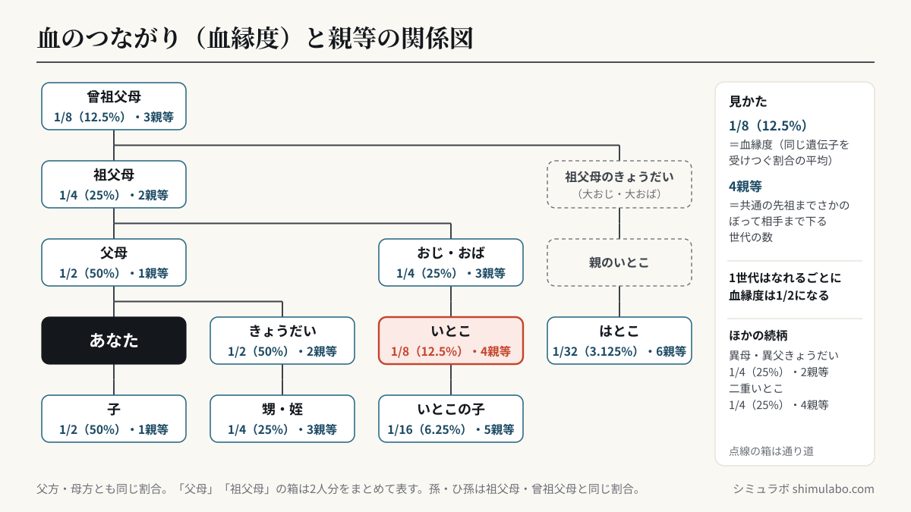
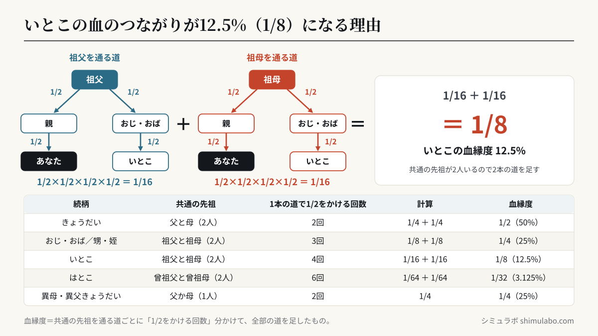

ポイント：血縁度は「2人が平均してどれくらい同じ遺伝子を受け継いでいるか」を表す割合。世代を1つたどるごとに1/2ずつ薄まります。親子・きょうだいは50%、祖父母と孫やおじ甥は25%、いとこは12.5%です。






図はタップすると大きく表示されます。資料やSNSに使うときは、出典「シミュラボ」とページのURLを添えてください。
血縁度の早見表
| 続柄 | 血縁度 | 分数 |
|---|---|---|
| 親子／きょうだい | 50% | 1/2 |
| 祖父母と孫／おじ甥 | 25% | 1/4 |
| いとこ | 12.5% | 1/8 |
| はとこ | 3.125% | 1/32 |
| 異母・異父きょうだい | 25% | 1/4 |
| いとこの子（いとこ違い） | 6.25% | 1/16 |
| 二重いとこ（父方・母方の両方がいとこ） | 25% | 1/4 |
いとこの血の繋がりは、なぜ12.5%？
いとこ同士は、共通の祖父母（祖父と祖母の2人）を通じてつながっています。祖父から見ると、あなたまで2世代、いとこまで2世代の合計4回、遺伝子が1/2ずつ受け継がれるので (1/2)4＝1/16。祖母を通じた分も同じく1/16なので、合わせて 1/8（12.5%）になります。はとこ（祖父母のきょうだいの孫）は、たどる世代が2つ増えるので1/32（約3.1%）まで薄まります。
「思ったより濃い／薄い」と感じたのではないでしょうか。遠いご先祖ほど血のつながりは薄くなりますが、その分たくさんの家系とつながっているとも言えます。ご先祖の人数は 先祖の人数 計算、親戚の距離は 親等 計算 で確かめられます。
よくある質問
- いとこの血の繋がりの割合は？
- 12.5%（8分の1）です。親子・きょうだいの50%の4分の1にあたります。
- はとこの血の繋がりの割合は？
- 3.125%（32分の1）です。いとこの4分の1になります。
- いとこはどれくらい血がつながってる？
- 血縁度は12.5%（8分の1）です。共通の祖父母から、それぞれ2世代分（各1/4）たどるためです。
- 親子ときょうだいはなぜ同じ50%？
- 親子は必ず半分を受け継ぎ、きょうだいは平均して半分の遺伝子を共有するため、どちらも約50%になります。
- 血縁度は相続に関係する？
- 相続の順位や割合は民法で別途定められており、血縁度そのものとは異なります。血縁度は遺伝的な近さの目安です。
- データは送信されますか？
- いいえ。計算はすべてブラウザ内で完結します。
参考
- 血縁度（近交・遺伝的関係の一般的な定義）